Ticorporate on noin neljä kuukautta kestävä opintojakso, jonka tarkoituksena on opetella projektityöskentelytaitoja. Opintojakson aikana on tarkoitus kehittää sovellus pienessä ryhmässä ketterän kehityksen Scrum-viitekehyksen mukaisilla työskentelymenetelmillä. Olin osana projektiryhmää, joka kehitti ulkopuolisen toimeksiantajan sovellusta, jonka tarkoituksena oli parantaa Jamkin ja Elisan välistä yhteistyötä.
Tavoitteeni opintojaksolle lähtiessä olivat parantaa koodausosaamista ja oppia käytännön projektityöskentelytaitoja. Tämä oli yksi syy, miksi halusin ulkopuolisen toimeksiantajan sovellusta kehittämään, koska uskoin saavani paremman ja laajemman kokonaiskuvan siitä millaista sovelluskehitys todellisuudessa on. Mielestäni saavutin molemmat tavoitteeni. Lisäksi halusin oppia lisää sovellusten testaamisesta ja parantaa Gitin käyttötaitojani. Tältä osin tavoitteet jäivät osittain saavuttamatta. Kuitenkin sain syvennettyä aikaisempia tietoja, ja myös uutta arvokasta tietoa siitä mitä testaajan työnkuvaan kuuluu.
Tulevaisuudessa haluaisin työllistyä frontend-sovelluskehitykseen. Tämän tiesin jo opintojaksolle lähtiessä ja se ajatus vahvistui syksyn aikana. Projektin johtamiseen liittyvät työt tai vaikka Scrum Masterina toimiminenkaan ei ole kuitenkaan pois suljettuja. Opintojakso tuki tietenkin ohjelmoinnin osalta näitä tavoitteita, koska tekemällä oppii, sekä omalta osaltani myös projektin vetämiseen tarvittavien taitojen oppimista.
Ticorporatessa minulla oli kolme roolia.
Päärooli
Sivurooli
Sivurooli
Projektissa pääroolini oli frontend-kehittäjä. Tavoitteinani opintojaksolle oli parantaa koodausosaamistani. Tässä tavoitteessa onnistuin mielestäni hyvin, vaikka paljon onkin vielä opittavaa. Angularin perusasiat olivat opintojakson alussa jo melko hyvin hallussa, mutta rakentamamme tietokannan monimutkaisuuden ansiosta opin käsittelemään objekteja paljon paremmin. Vaikka olinkin koodannut Angularilla ja TypeScriptillä aiemmin, niin tässä projektissa halusin tehdä oikeaoppista koodia ja onnistuin kehittämään etenkin TypeScript-taitojani huomattavasti.
Neljän kuukauden aikana useiten esittämäni kysymykset olivat: miksi ja miten niin en voi muka tehdä näin.
Sovellukseen tein:
Osa home templaatin filtteröinnin painikkeiden koodista. Tämä näkymä näkyy mikäli näytön leveys on yli 1400 px.
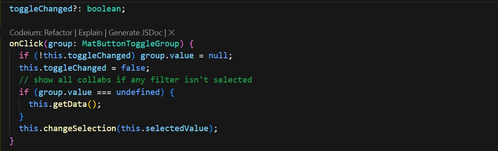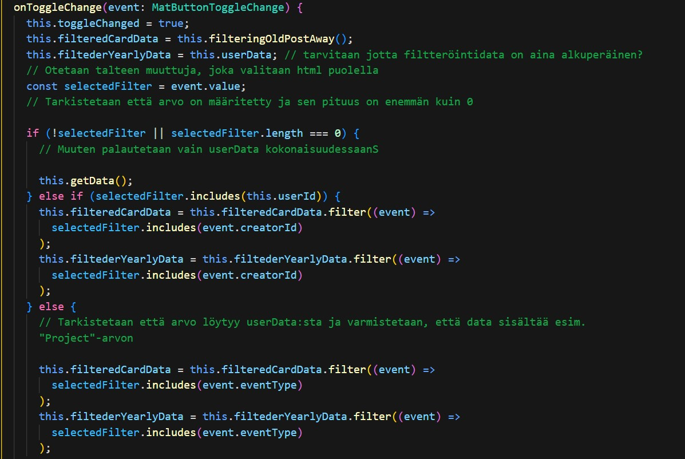onClick-funktio, katsoo onko jokin filtteröintipainikkeista valittuna vai näytetäänkö kaikki. onToggleChange-funktio hoitaa tarvittavan filtteröinnin datasta sen perusteella mikä painike on valittuna. Suurin haaste oli saada filtteröinti, järjestäminen ja näkymän vaihtamiseen tarvittavat funktiot toimimaan yhteen.
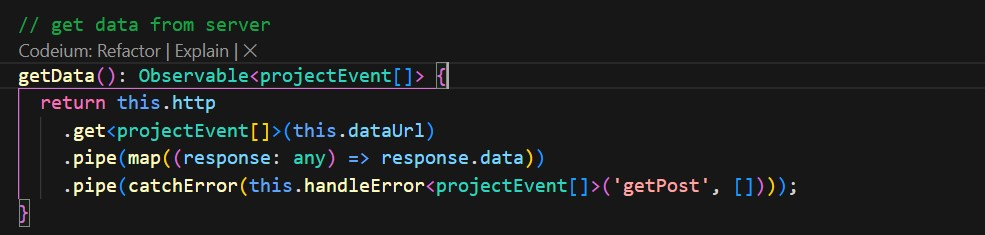 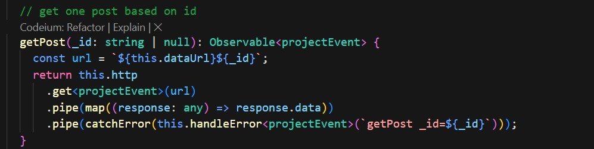 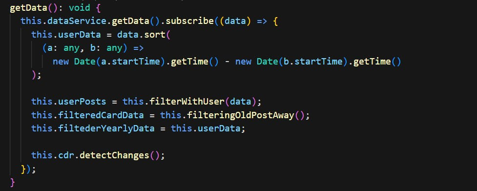Ylemmissä kuvissa servicessä oleva HTTP-pyyntö serverille, joka tekee tietokantahaun sekä kaiken tiedon haun etusivulle ja yksittäisen postauksen tiedon. Alimman kuvan home-komponentissa oleva getData-funktio hakee servicen avulla tiedot postausten tiedot, järjestää valmiiksi aikajärjestykseen. Järjestetyt tiedot tallennetaan muuttujiin muita funktioita ja komponentteja varten.
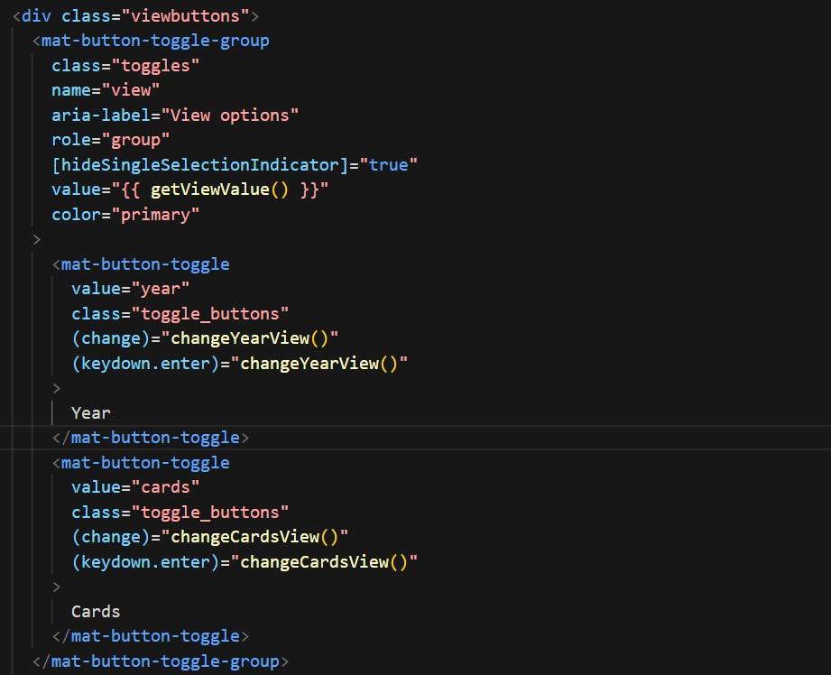 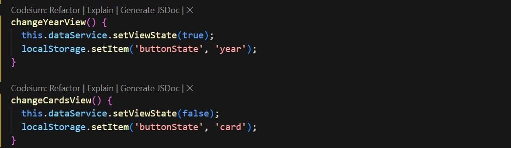 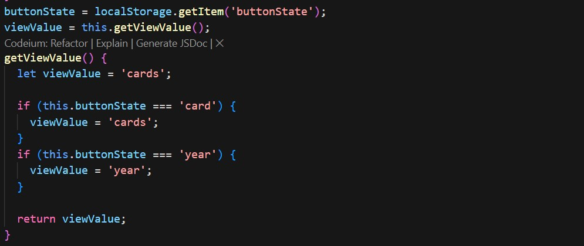 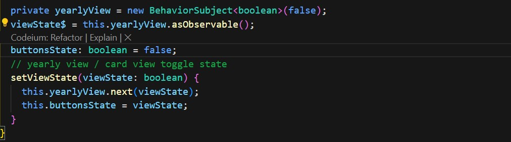Ylin kuva näyttää näkymien vaihtamispainikkeiden templaatin koodin. Tässä myös esimerkki saavuttettavuudelle näppäimistöllä. Keskimmäiset kuvat näyttävät näkymien vaihtamiseen tarvittavat funktiot ja alimmainen kuva on servicestä. Tämän toteuttaninen oli yksi suurimmista haasteistani sovelluksen koodaamisen aikana ja myös yksi suurimmista onnistumisistani.
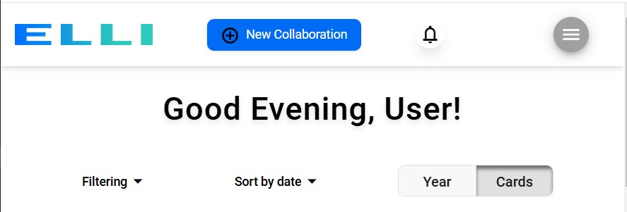 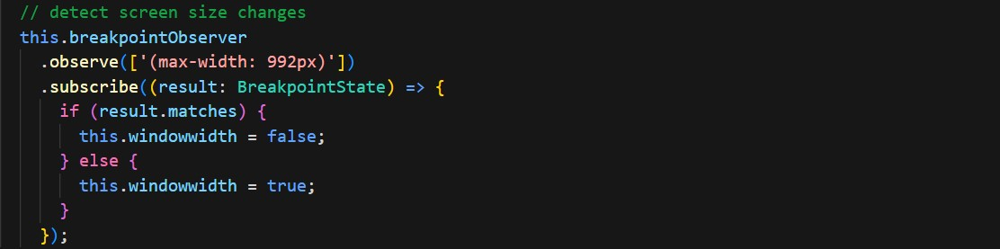Kuva etusivun filtteröinneistä ja navigaatiopalkista pienellä näytöllä. Breakpointobserver oli itselle uusi tapa saada näkymän layoutia muutettua ilman media queryjen käyttämistä. Päänvaivaa tässä tuotti se, että miksi tämä funktio toimi reaktiivisesti navigaatio-komponentissa, mutta home-komponentissa ei. Asia jäi mysteeriksi, home-komponentinkin sain kuitenkin lopulta toimimaan käyttämällä home-komponentin funktiossa Angularin ChangeDetectorRef -luokkaa.
Osaamiseni testauksesta oli Ticorporaten alussa melko vähäistä. Opintoni eivät juurikaan olleet keskittyneet testaamiseen, ja testauksesta koenkin oppineeni syksyn aikana melko paljon. Testauksen aloitin hieman myöhään ja olisinkin mielelläni tehnyt enemmän yksikkötestejä ja end-to-end -testejä. Nämä kuitenkin jätettiin jo alun perin tarkoituksella vähäisiksi, koska totesin ettei sivuroolissa aika tule osaltani riittämään.
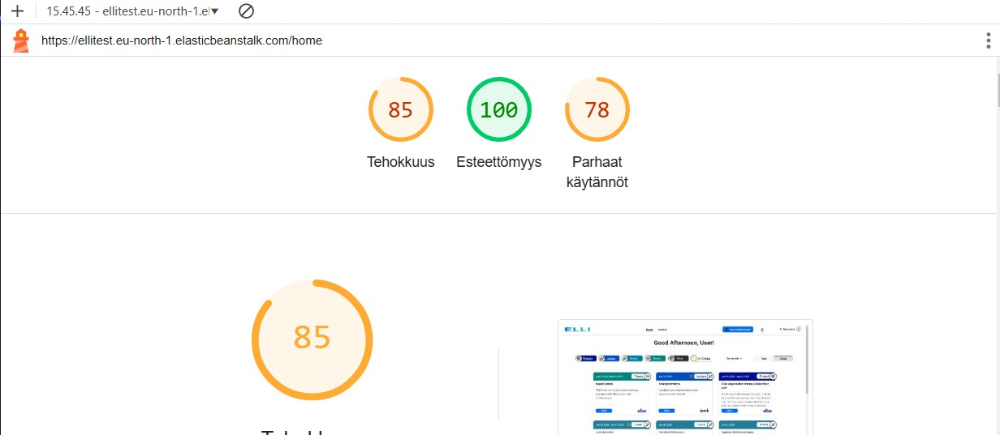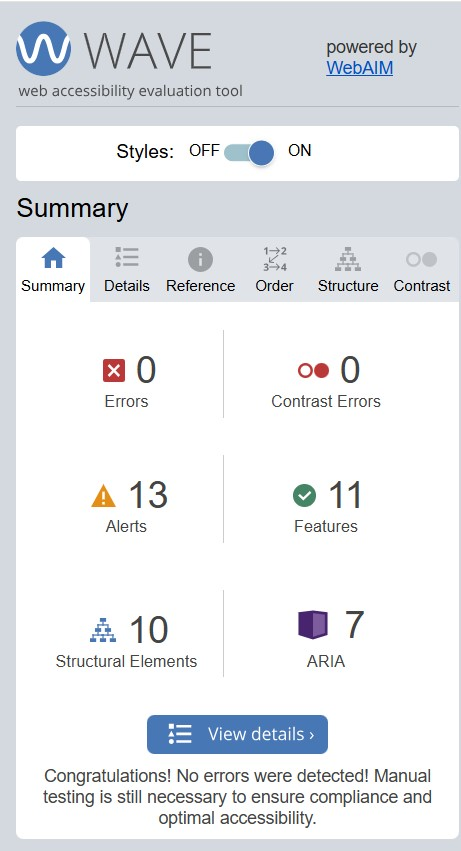Sovelluksessa yhtenä vaatimuksena oli, että sen on oltava käytettävä ja noudatettava WCAG 2.x saavutettavuusmäärittelyjä ja tähän testaus suurelta osin painottuikin. UI/UX suunnittelussa oli nämä asiat tietenkin otettu huomioon ja minun osanani olikin varmistaa, että vaatimukset täyttyvät. Osana tätä jouduin tutustumaan paljon eri dokumentaatioihin web-sovellusten käytettävyyteen ja saavutettavuuteen liittyen. Tässä siis opin paljon kyseisistä asioista. Käytettävyys- ja saavutettavuustestauksessa käytin apuna WAVE, Lighthouse ja axe DevTools työkaluja. Näiden työkalujen raporttien avulla parantelin sovelluksen koodia varsinkin saavutettavuuden osalta. Lisäksi varmistin, että sovellus toimii hyvin myös näppäimistöllä. Tämä oli pääosin hyvin toimiva jo valmiiksi, koska käytimme Angular Materialsia ja siinä on otettu asia huomioon. Kuitenkaan, koska Angular Materialsin kaikki komponentit eivät taipuneet siihen mitä sovelluksemme olisi tarvinnut niin esimerkiksi navigaatiopalkin oman profiilin pudotusvalikon jouduin rakentamaan itse siten että se ymmärtää näppäimistökomentoja. Lisäksi syksyn aikana suunnittelin ja tein käyttäjätestausta, jonka tulosten perusteella vielä muokkasimme sovellusta enemmän käyttäjiä palvelevaksi. Käyttäjätestauksen perusteella mm. poistimme omat yhteistyöt sisältävän sivupalkin ja lisäsimme sen osaksi filtteröintiä.
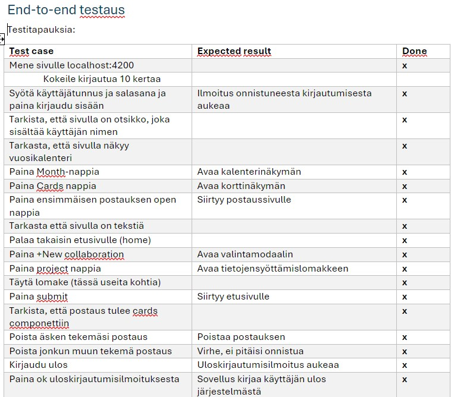 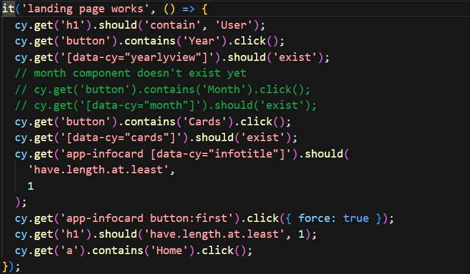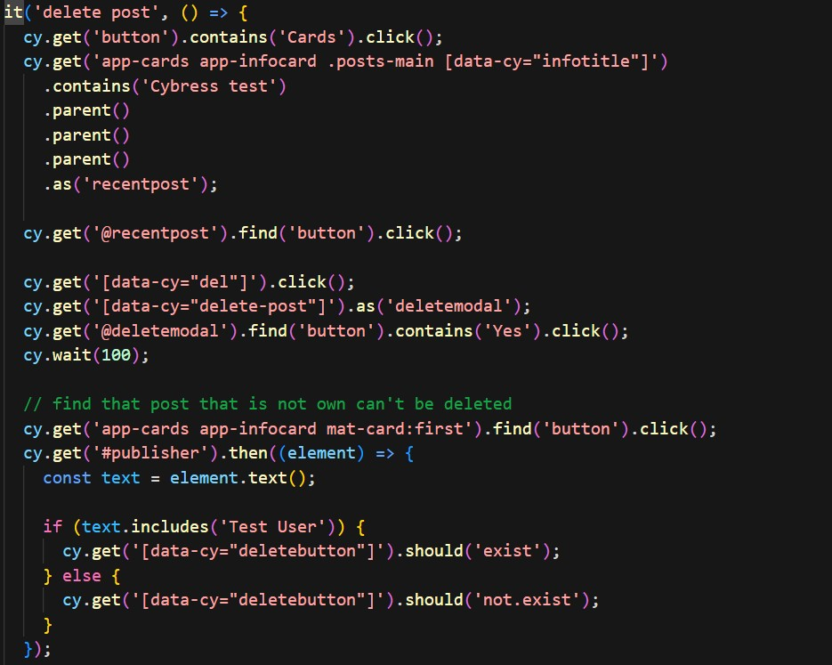Tein sovellukseen Cypress end-to-end testitapaukset, jotka testasivat sovelluksen kannalta tärkeimmät toiminnot kuten mm. tietokantayhteys toimii, etusivu toimii, navigointipalkki toimii, sekä vuosi että korttinäkymässä on tietoa. Nämä testit vielä yhdistettiin julkaisuputkeen siten että sovellusta ei pysty julkaisemaan, mikäli testit eivät mene lävitse. Tässä en kuitenkaan ollut osallisena muuten kuin hieman autoin pilviasiantuntijaamme.
Opintojakson alussa tietoni ja osaamiseni Scrum Masterin tehtävistä ja ylipäätään scrum-prosessista olivat hyvin vähäiset ja sekin teorian tasolla. Tässä roolissa koen oppineeni eniten uutta. Tietenkin luin scrum-oppaan moneen kertaan ja lisäksi sain arvokasta ohjeistusta ja apua Susannalta käytännön tasolta. Pääasiassa tehtäviäni oli scrum-palaverien järjestäminen ja niiden läpivieminen. Alusta alkaen huolehdin, että daily scrumit tulee pidettyä lyhyesti ja joka päivä samaan aikaan (pieniä poikkeuksia lukuun ottamatta). Nämä tehtävät tuntuivat alkuun varsin hankalilta ja suorastaan kaoottisilta, mutta loppua kohden ne alkoivat sujumaan lähes itsestään.
Tehtävään kuului paljon organisointia, aikataulutusta ja muistettavaa, jotka eivät kuulu vahvuuksiini ja nämä olivat osa oppimistavoitteitani, joissa myös kehityin paljon syksyn aikana, joten etenkin siltä osin saavutin alun tavoitteet. Kehitettävää toki on vielä paljon, suurimpina osa-alueina parempi suunnittelu kokouksien osalta, sekä dokumentointi.
BackCopyright © Katja Kalliokunnas
Distributed By Themewagon